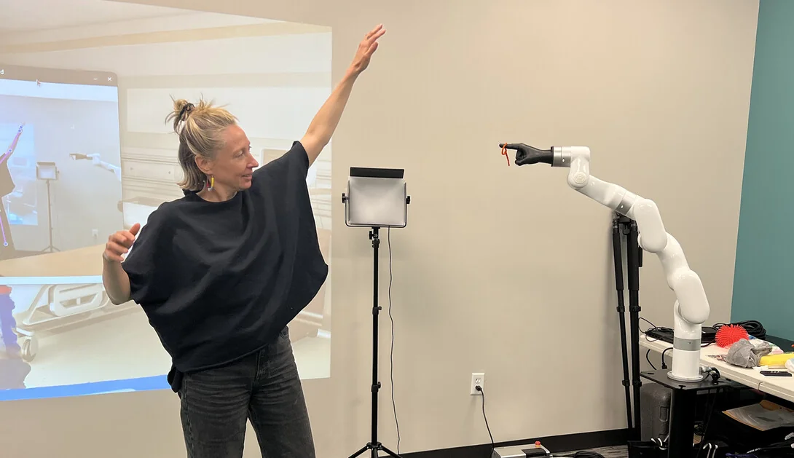
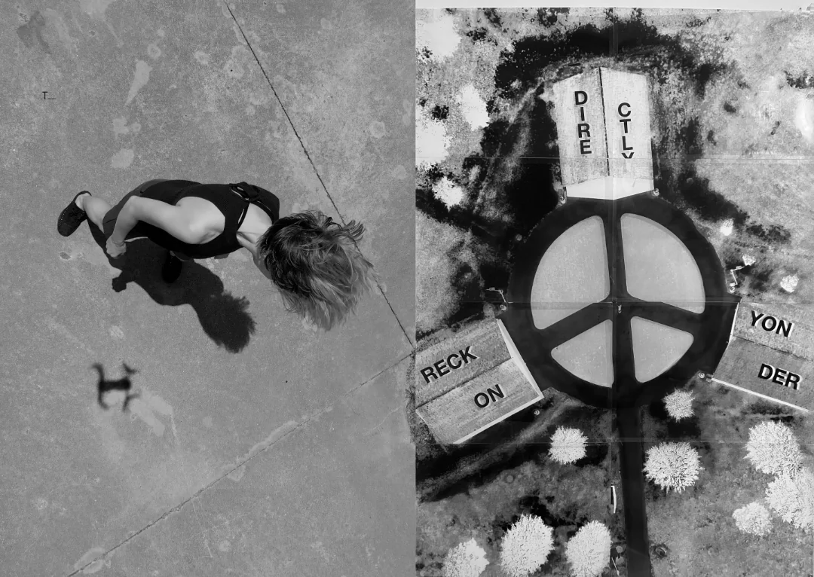
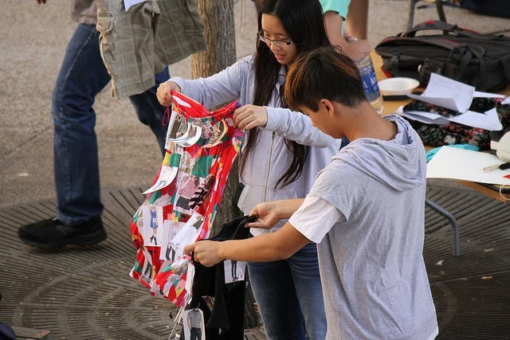
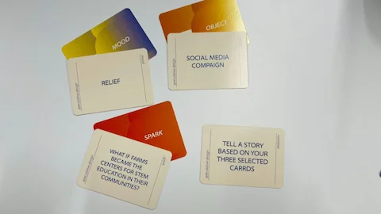
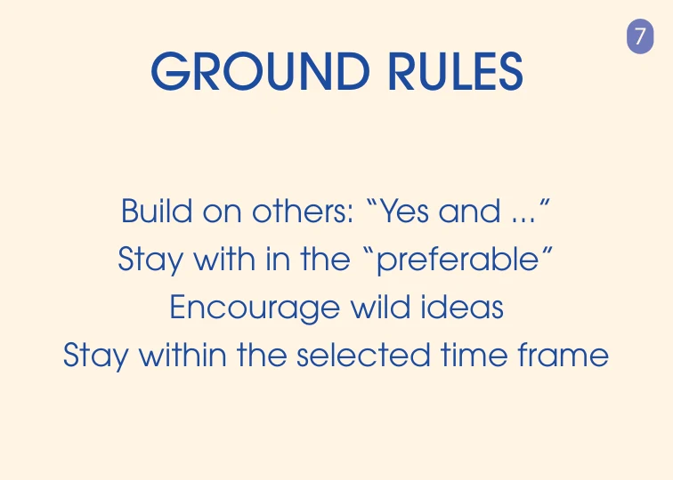
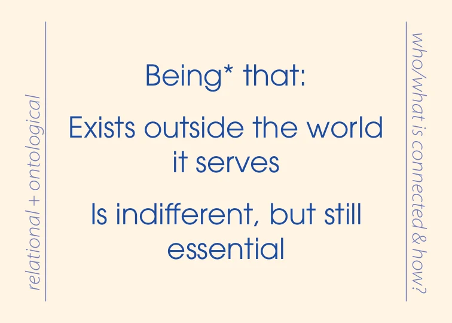
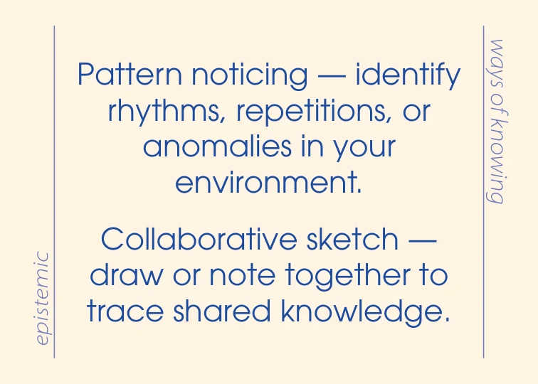

Embodied worldbuilding through performance and play
Co-Constructing
Multispecies
Futures
An evolving toolkit for imagining and rehearsing multispecies futures through chance, affect, storytelling, and embodied play.
The toolkit builds on The Thing From The Future and the Rehearsing Realities framework, and has expanded through workshops and embodied practice. The Card Deck and Interactive Tool help a group make a story, enter a scene, and return to it with what they notice. Read about its development and lineages.



Scenes from the wider practice. Open an image for its context and credits.
Start here
Choose a way to begin.
Try the Interactive Tool
Draw a place and a time, add optional layers, then tell and rehearse a scene. Open it in your browser to begin.

Cards on the table · workshop editionPrint the Card Deck
Choose Letter or A4, print a test sheet, and make a set for your table. You can also browse every source card below.

An original facilitator cardLead a Session
Follow the facilitation guide to invite a group, choose prompts, make a scene, and reflect together.
Browse the original cards · About the toolkit & its framework
01 / Play
Let chance into the room.
Begin with Spatial and Temporal. Add only the layers you need.
THE INTERACTIVE TOOL
Co-Constructing
Multispecies Futures
Pull the lever. Hold onto a result that interests you. Add a voice, a feeling, a collaborator, a form, or a twist.
Tell it in writing or record your voice. Then use Now: try it to take the story into your body, your surroundings, or a scene with others.
Open the interactive tool Download the standalone HTMLfrom now
One possible beginning.
Pull for another.
The interactive tool has its own adaptable prompt bank. The card browser below preserves the complete source deck, including the workshop-specific material.
02 / Explore
A deck of possibilities.
Browse the original artwork, turn a card over, or read its text. Several cards offer more than one prompt: choose one, or work with the combination.
Card artwork and source wording are retained. The original 122-card sequence includes 104 activity cards and 18 facilitator cards. The general selection contains 94 activity cards; food-system speculations remain a separate collection.
03 / Print & keep
Bring it to the table.
Use the general selection for a new setting, or return to a complete workshop source edition.
GENERAL SELECTION / WORKING EDITION
94 cards.
A place to begin.
The original artwork, selected for use across contexts. Choose US Letter or A4 and start with the single-sided fold-and-glue edition. No duplex printer is needed.
94 cards · 3 fold-and-glue cards per sheet · 32 sheets. Print at 100% / Actual size, cut the strips, fold, and glue. Each finished card is 3.5 × 2.5 inches.


Home printing and professional printing
The professional single-card PDFs use a 2.5 × 3.5 inch trim size (63.5 × 88.9 mm). Each PDF page is one side of a card; odd pages are fronts and the following even pages are their backs. The professional downloads are single-card print files; a print provider needs to arrange them on sheets. The home-print editions above are already arranged for Letter or A4. For duplex, print pages 1–2 as a proof before printing the whole set.
The live-text and cropped outlined PDFs have no separate bleed area. For production, use a download explicitly labeled with bleed and crop marks. The home-print editions use the original card artwork without production bleed and add their own cutting and folding guides.
04 / Gather
Make a world
with someone.
A small beginning is enough. Work with the layers that serve your group, and add complexity as it becomes useful.
Invitation → Prototyping → Rehearsal. Begin with a question and the people in the room. Give an imagined world a form through stories, sketches, objects, or sounds. Then enter a scene, notice what happens, and return to making.
- 01
Choose a where and a when.
Use Spatial and Temporal to set the scene. Name a place, a scale, a rhythm, or a duration. In the interactive tool, these two reels are always active.
- 02
Invite another layer.
Add a feeling, a voice, a form, or a more-than-human collaborator. A being can be living, non-living, material, elemental, or algorithmic.
- 03
Tell it together.
Build on one another’s contributions. Tell, draw, write, sound, or rehearse a scene. Let the cards open possibilities for futures you would want to inhabit.
- 04
Change the conditions.
When you feel stuck—or ready to be surprised—add a Pivot. Hold onto what matters and re-roll the rest.
- 05
Now: try it.
Follow a Ways of Knowing or Sensing prompt. Move, observe, listen, handle a material, or embody another perspective. Return to the story with what you noticed.
Enter the scene in different ways.
EncounteringMeet another being or force. Let it respond, through a role, a voice, an object, or a situation.
Moving withFind a relation through rhythm, distance, orientation, or attention. Let movement shape the scene.
Becoming-withTry another scale, pace, or constraint. Notice how it changes what you can sense and imagine.
These overlapping approaches come from Performing the What-If. Move between telling, making, and rehearsing while the scene is still taking shape. Adapt the activity to the bodies present. A rehearsal may stay unresolved and still matter.
Another way in: make your own “What if…” cards
Begin with a pleasant sensory memory, sharing only what feels comfortable. Agree on a time horizon, imagine something you would want to happen, and write a “What if…” prompt on a blank card. Pool these prompts, then draw one Construction, one Speculation, and one Affect card as a group.
Choose among the options together and make a short sensory story. Tell it, write it for others to read, or rehearse it. This recipe follows the FoodID Teachers workshop handout; that workshop used food-system futures in 2046. Your group can choose its own setting and horizon.
05 / About & cite
The project, its history
& how to cite it.
Co-Constructing Multispecies Futures is a card deck and interactive toolkit for embodied worldbuilding through performance and play.
Its embodied approach is described in Performing the What-If, the forthcoming chapter by Ash Eliza Smith and Julia McQuillan in Strategic Handbook of Worldbuilding (Routledge). Rehearsal helps make a world while it is still taking shape.
The general toolkit can travel between classrooms, studios, research groups, communities, and workshops. Context-specific decks remain part of its history and can support more focused sessions.
Explore the workshop and development history ↗
The interactive tool uses the same project name. Its prompt bank is editable in the browser and is distinct from the complete analog deck. Each downloadable version is labeled and retained in the version history.
Project credits
Created by Ash Eliza Smith, developed in the Speculative Devices Lab with Julia McQuillan and Sam Bendix.
The toolkit builds on The Thing From The Future by Stuart Candy and Jeff Watson (2014) and the Rehearsing Realities framework by Smith, Leadabrand, and colleagues (in press).
Developed through Speculative Devices Lab × Edgeworks at the University of Nebraska–Lincoln.
Project repository ↗The existing repository includes a CC0 1.0 license. This working site preserves that file. Use the current citation guidance and record the version you use. A versioned Zenodo release is being prepared; no DOI is claimed for this development edition.
The interactive tool runs in your browser. It does not upload your written notes or recordings. Download your work before closing or reloading the tool.